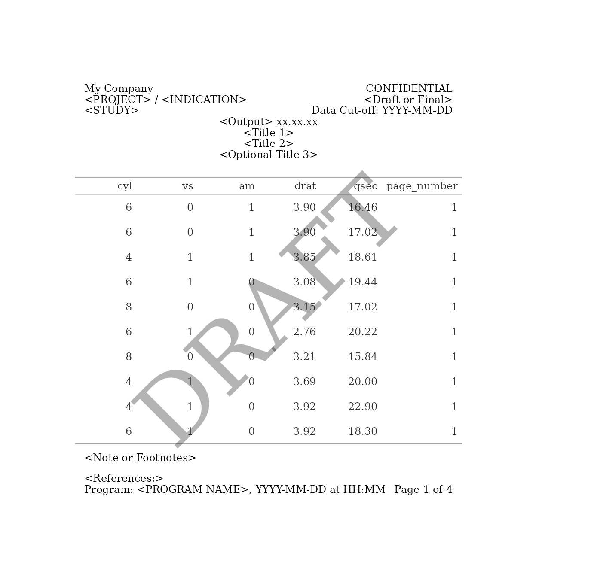
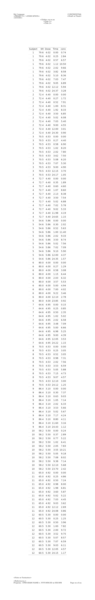

multi_page_examples.RmdThis document discusses advanced uses of gridify, to
automate the generation of multiple figures or tables. It is recommended
that you start with
vignette("gridify", package = "gridify") and
vignette("simple_examples", package = "gridify"), before
continuing with this vignette.
The magrittr and ggplot2 packages will be
useful for the examples.
In this section, we will be discussing a method to automate the
generation of multiple figures for data visualization. The code provided
below is written in R and uses the ggplot2 and
gridify libraries.
The process involves:
sprintf() to template text elementsThis strategy is particularly useful when you have a large number of figures to generate that share common text elements.
When creating multiple figures at once, it can be useful to have some metadata relating to your cell text in a list to help automate the process of adding titles, footers, etc. This could be via a dataset created in your code, or a separate file that is read in, e.g. an excel file.
In the example below, we have created some dummy metadata based on
the mtcars dataset. The elements in global
apply to all figures, the others are figure specific so have been listed
individually.
figures_data <- list(
global = list(
project = "My Project",
indication = "My Indication",
study = "My Study",
cutoff = "Data Cut-off: YYYY-MM-DD",
program = "program1.R",
var1 = "mpg",
note1 = "Note: Violin figure: compact display of continuous distribution; it is a blend of boxplot and density,
the latter based on a Gaussian kernel estimator.",
note2 = "Note: Placebo subjects switched to Study Drug at/after Week 16.",
note3 = "Note: Total Study Drug includes subjects randomized to Placebo and to Study Drug.",
note4 = "Note: N denotes the treatment population and n denotes the contributing population for
the analysis for each treatment, parameter and visit"
),
figures = list(
figure1 = list(
number = "1.1",
title1 = "My title Group A",
title2 = "My title 2",
var2 = "wt"
),
figure2 = list(
number = "1.2",
title1 = "My Title Group B",
title2 = "My title 2",
var2 = "cyl"
)
)
)If you already have a dataset, such as an excel file, then you can process this file to get a proper list. You should add additional columns to the file to help build each figure.
library(readxl)
dat <- readxl::read_excel("PATH TO YOUR FILE")
figures <- lapply(seq_len(nrow(dat)), function(row) dat[row, ])
# Optionally, you can add names to the elements of 'figures' so you won't have to subset by index later
names(figures) <- paste0("figure", seq_along(figures))
# Alternatively, you can leave the 'dat' object as it is and loop through its rows,
# or with row names if availableIt would be helpful to create a figure-generating function with arguments that affect the elements of the output, an example of this could be:
generate_figure <- function(data, var1, var2) {
ggplot2::ggplot(data, ggplot2::aes(x = !!as.name(var1), y = !!as.name(var2))) +
ggplot2::geom_line()
}You want to collect all figures in a separate list. Here, the
variable figures_list is a container for our outputs.
figures_list <- list()Optionally, set global variables, which are usually defined at the top of a script.
COMPANY <- "My Company"
STATUS <- "DRAFT"Now you can run a for-loop to generate many gridify
objects.
for (figure_index in seq_along(figures_data$figures)) {
figure_obj <- generate_figure(mtcars, figures_data$global$var1, figures_data$figures[[figure_index]]$var2)
# Add text elements using `sprintf()`
gridify_obj <- gridify(
object = figure_obj,
layout = pharma_layout_A4()
) %>%
# Add STATIC text elements to the `gridify` object
# You can define these values as variables at the top of your script
set_cell("header_left_1", COMPANY) %>%
set_cell("watermark", toupper(STATUS)) %>%
set_cell("header_right_2", STATUS) %>%
# Add VARIABLE text elements to the gridify object
set_cell("header_left_2", sprintf("%s / %s", figures_data$global$project, figures_data$global$indication)) %>%
set_cell("header_left_3", figures_data$global$study) %>%
set_cell("header_right_3", sprintf("%s", figures_data$global$cutoff)) %>%
set_cell("output_num", sprintf("Output %s", figures_data$figures[[figure_index]]$number)) %>%
set_cell("title_1", figures_data$figures[[figure_index]]$title1) %>%
set_cell("title_2", figures_data$figures[[figure_index]]$title2) %>%
set_cell("note", paste(figures_data$global[c("note1", "note2", "note3", "note4")], collapse = "\n")) %>%
set_cell("footer_left", sprintf("Program: %s, %s", figures_data$global$program, Sys.time())) %>%
set_cell("footer_right", sprintf("Page %s of %s", figure_index, length(figures_data$figures)))
figures_list[[figure_index]] <- gridify_obj
}.Rmd and .Qmd documents should be
considered as alternatives for saving gridify objects,
which can be used directly in your Rmd and Qmd documents, similar to the
gridify package vignettes.
You can generate a PDF for each figure individually and then combine them in software like Acrobat.
if (!dir.exists("figures")) {
dir.create("figures")
}
export_to(
figures_list,
sprintf("./figures/test_Company_A4_layout_%s.pdf", seq_along(figures_list))
)Or you can generate a single PDF file with all figures.
export_to(
figures_list,
"./figures/test_multi_Company_A4_layout.pdf"
)Large tables can be difficult to display on a single page, with the
shrunken dimensions making them hard to read and interpret.
gridify, in combination with the gt package,
solves this by allowing you to split tables based on row limits, helping
maintain a professional format. Here is an example of this in practice
when creating outputs for pdf/docx files.
If you are dealing with an extensive table, displaying all the data on a single page can make it difficult to read. This is where splitting the table based on the number of rows is an effective solution. Let’s see how this can be implemented.
First, we specify the different features we want the output to have.
table_cols <- c("cyl", "vs", "am", "drat", "qsec") # Columns that appear in final output
df <- mtcars[, table_cols]
rows_per_page <- 10
row_height_pixels <- 10
font_size <- 12
font_type <- "serif"
number_of_rows <- nrow(df)
number_of_cols <- ncol(df)
number_of_pages <- ceiling(number_of_rows / rows_per_page)Next, we divide the original data frame into smaller tables.
If the last table doesn’t meet the rows_per_page
specification, it will appear as if it was placed in the middle of the
page. For it to be placed at the top, the following code will add empty
rows to the last table until there are rows_per_page
rows.
last_page <- pages[[number_of_pages]]
last_page_nrows <- nrow(last_page)
if (last_page_nrows < rows_per_page) {
rows_difference <- rows_per_page - last_page_nrows
append_table <- data.frame(matrix(" ", nrow = rows_difference, ncol = ncol(df)))
colnames(append_table) <- colnames(df)
pages[[number_of_pages]] <- rbind(last_page, append_table)
}Finally, we generate each page of the output, by converting each
table into a gtable with the gt package then
looping over the gridify function.
results_list <- list()
for (iter in seq_along(pages)) {
gt_input <- gt(pages[[iter]]) %>%
tab_options(
table.width = pct(100),
data_row.padding = px(row_height_pixels),
table_body.hlines.color = "white",
page.numbering = TRUE,
table.font.size = font_size,
table.font.names = font_type
)
results_list[[iter]] <- gridify(
gt_input,
layout = pharma_layout_A4()
) %>%
set_cell("header_left_1", "My Company") %>%
set_cell("header_left_2", "<PROJECT> / <INDICATION>") %>%
set_cell("header_left_3", "<STUDY>") %>%
set_cell("header_right_1", "CONFIDENTIAL") %>%
set_cell("header_right_2", "<Draft or Final>") %>%
set_cell("header_right_3", "Data Cut-off: YYYY-MM-DD") %>%
set_cell("output_num", "<Output> xx.xx.xx") %>%
set_cell("title_1", "<Title 1>") %>%
set_cell("title_2", "<Title 2>") %>%
set_cell("title_3", "<Optional Title 3>") %>%
set_cell("note", "<Note or Footnotes>") %>%
set_cell("references", "<References:>") %>%
set_cell("footer_left", "Program: <PROGRAM NAME>, YYYY-MM-DD at HH:MM") %>%
set_cell("footer_right", paste0("Page ", iter, " of ", number_of_pages)) %>%
set_cell("watermark", "DRAFT")
}
print(results_list[[1]])
gridify supports three file types in
export_to(): PDF, JPG, and PNG.
Using the result from the previous example, the first argument of
export_to() is either your gridify object or a
list of them, and the second is either the desired file path (including
file name) or a vector of them.
if (!dir.exists("tables")) {
dir.create("tables")
}For multi-page outputs, PDFs are the most convenient to use. As
mentioned earlier, Rmd and Qmd documents are alternatives for saving
gridify objects, which can be saved directly into your
.Rmd and .Qmd documents.
export_to(
results_list,
to = "./tables/multipageA4.pdf"
)
export_to(
results_list,
to = "./tables/multipageA4portrait.pdf",
width = 8.3,
height = 11.7
)To export as a PNG or JPG, you have two options:
This is done by providing a list of names for to. The
lengths of the names vector and the gridify input must be
the same.
export_to(
results_list,
to = file.path("./tables", sprintf("singlepage%s.png", seq_along(results_list))),
width = 2400,
height = 2000,
res = 300
)
export_to(
results_list,
to = file.path("./tables", sprintf("singlepage%s.jpg", seq_along(results_list))),
width = 2400,
height = 2000,
res = 300
)
export_to(
results_list,
to = file.path("./tables", sprintf("singlepage%s.pdf", seq_along(results_list))),
width = 2400,
height = 2000,
res = 300
)In pharmaceutical and other industries, presenting tables often
requires customization to meet reporting standards. While splitting by
rows is a common approach for handling large datasets, it is not the
only option. Here are some potential ways in which a table could be
split up, where gridify could then be used to generate a
new page for each table:
These methods provide greater flexibility in structuring tables, making them easier to interpret and align with diverse reporting needs across industries.
When rendering a .Rmd or .Qmd document into HTML, using ‘fixed’ scale measurements for heights is essential to prevent excessive scrolling or content being cut off. Additionally, layout margins should be defined in absolute units, such as inches, cm or mm.
When trying to find the perfect fig.width and
fig.height for the output, instead of guessing, you can use
a binary search method to quickly find the ideal height. Here is an
example:
Keep refining and you will quickly find the optimal height.
The R code below has fig.width = 8 and
fig.height = 45. Note that
pharma_layout_letter is using the default heights (similar
to "fixed" scales) and margins in
"inches".
gt_obj <- gt::gt(Theoph)
g <- gridify(
object = gt_obj,
layout = pharma_layout_letter()
) %>%
set_cell("header_left_1", "My Company") %>%
set_cell("header_left_2", "<PROJECT> / <INDICATION>") %>%
set_cell("header_left_3", "<STUDY>") %>%
set_cell("header_right_2", "<Draft or Final>") %>%
set_cell("output_num", "<Table> xx.xx.xx") %>%
set_cell("title_1", "<Title 1>") %>%
set_cell("title_2", "<Title 2>") %>%
set_cell("note", "<Note or Footnotes>") %>%
set_cell("references", "<References:>") %>%
set_cell("footer_left", "Program: <PROGRAM NAME>, YYYY-MM-DD at HH:MM") %>%
set_cell("footer_right", "Page xx of nn")
print(g)